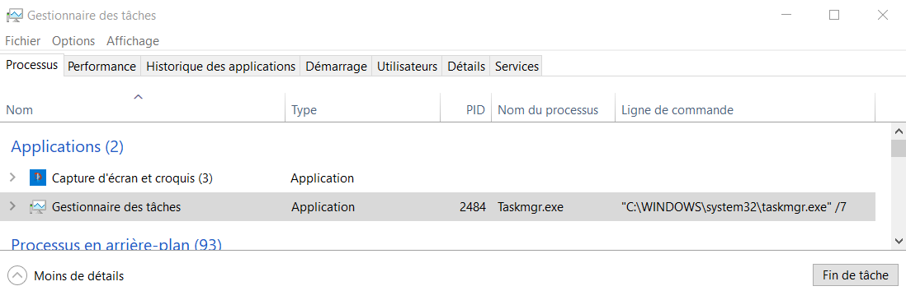
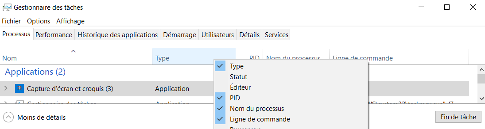

Un processus est un programme en cours d’exécution. Par exemple, si on ouvre le bloc-notes de windows, un processus est créé par le système d’exploitation.
Le système d’exploitation dispose d’un programme qui affiche les différents processus. Pour windows, il s’agit du gestionnaire des tâches.
Ouvrir le gestionnaire des tâches de windows. Vous devez obtenir la fenêtre suivante:

Assurez-vous d’être sur l’onglet Processus et d’avoir les mêmes champs d’informations, à savoir, le nom, le type, le PID, le nom du processus et la ligne de commande.
Note
Si les champs ne correspondent pas, faites un clic droit sur la ligne des champs et sélectionner les champs souhaités.

Retrouver dans le gestionnaire des tâches la ligne du processus associé à ce programme.
Quel est nom du processus associé au gestionnaire des taches ?
Quel est le programme et le chemin absolu associé au gestionnaire des tâches ?
Le PID est l’identifiant de processus.
Quel est l’identifiant de processus associé au gestionnaire des tâches ?
Si on ferme le gestionnaire des tâches, qu’en est-il de son processus ?
On ouvre à nouveau le gestionnaire des tâches. Quel sera son PID ? Quelle conclusion en tirer.
Pour chaque programme exécuté, un processus est créé.
Ouvrir le bloc-notes de windows et relever son PID.
Est-il possible d’exécuter plusieurs fois le bloc-notes. Si oui, quelle est l’information qui différencie les processus ?
On crée un fichier texte avec le bloc-notes nommé test.txt contenant le texte « les processus ».
Est-il possible d’ouvrir ce fichier texte avec un autre éditeur de texte ? De le modifier ?
Est-il possible d’ouvrir le fichier test.txt avec le bloc-notes et un autre éditeur de texte en même temps. De les modifier en même-temps ?
Quel problème peut se poser si on accède à une même ressource avec 2 processus différents ?
Ouvrir le fichier test.txt avec l’application LibreOffice.
Est-il possible de supprimer le fichier test.txt alors qu’il est ouvert avec l’application LibreOffice. ? Comment l’expliquer ?
Recommencer cette opération en utilisant le bloc-notes. Que remarquez-vous ?
Le navigateur que vous utilisez a généré un processus visible dans le gestionnaire des tâches.
Que remarquez-vous sur ce processus ? Comment l’expliquer ?
Quel est le PID du processus associé à votre navigateur ? Comment le distinguer des autres processus ?
Est-il possible de mettre fin à tous ces processus ?